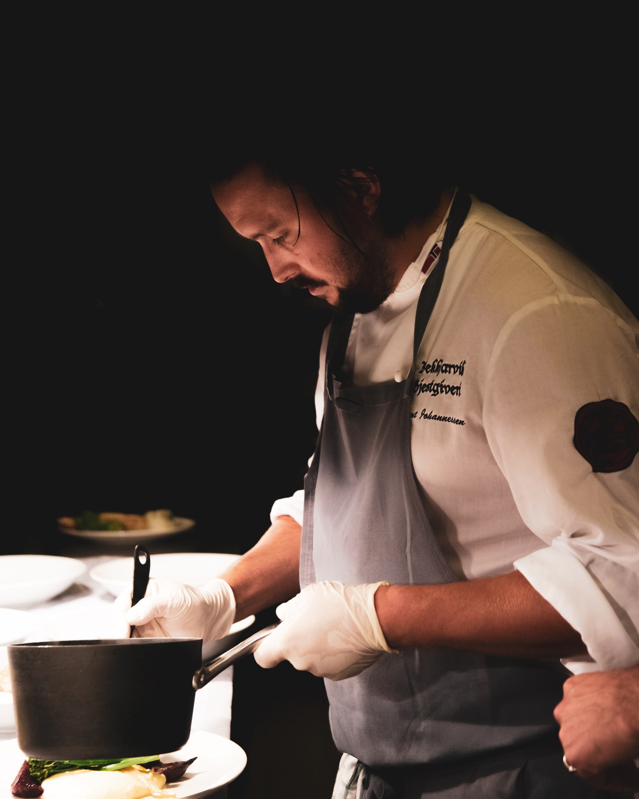

Bienvenidos al blog de Be Your Own Chef. Este blog trata sobre alimentosnutritivos caseros con un lado de reflexiones sobre la alimentaciónconsciente, la vida lenta y la creación de una conexión saludable con la comida para encontrar un equilibrio entre la comida y el proceso dealimentarnos todos los días. Sobre todo, encontrará recetas fácil depreparar con esencia de hogar, artesanales, pero gourmets. Muchas de estas recetas son de mi colección de varios años, las que presento aquí las he practicado y adaptado de alguna manera, hay tambien creaciones propias basadas en recetas tradicionales. Considero cocinar, cuando se hace por placer y para agradar un acto de amor y sobre todo creo que: «El arte Puede mostrarse un tanto en lienzo como en un plato cocinado con amor» Agradezco enormemente su visita y sobre todo que incluya mi blog en uno de sus sitios de visitas es mi recompensa por esta labor que hago por placer, de la misma forma agradezco sus comentarios y sugerencias. Bienvenidos de nuevo y espero que encuentren mucha inspiración en nuestro blog para cocinar en casa.
 Be Your Own Chef
Be Your Own Chef